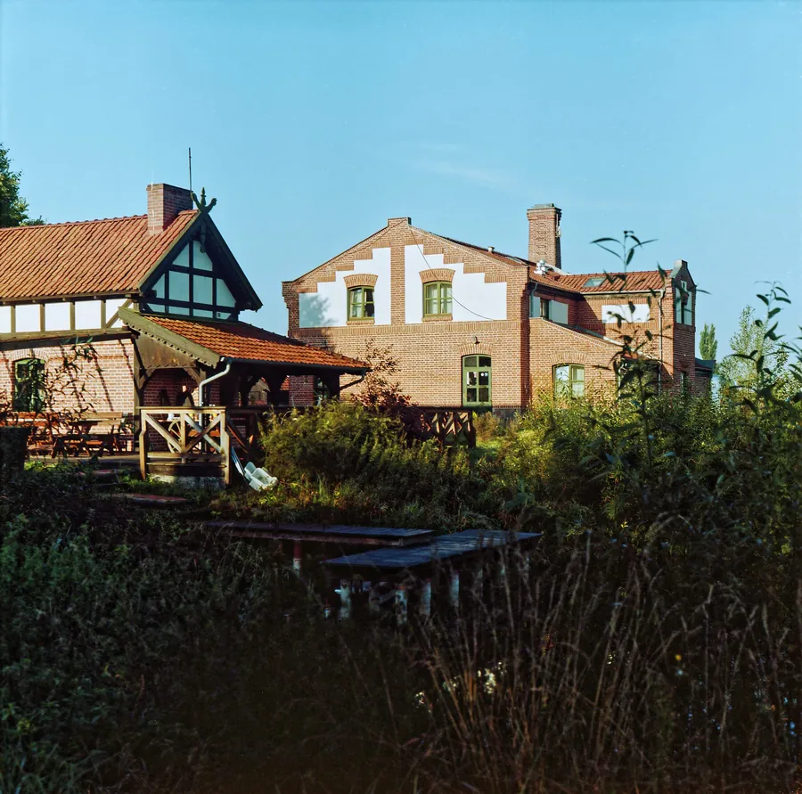
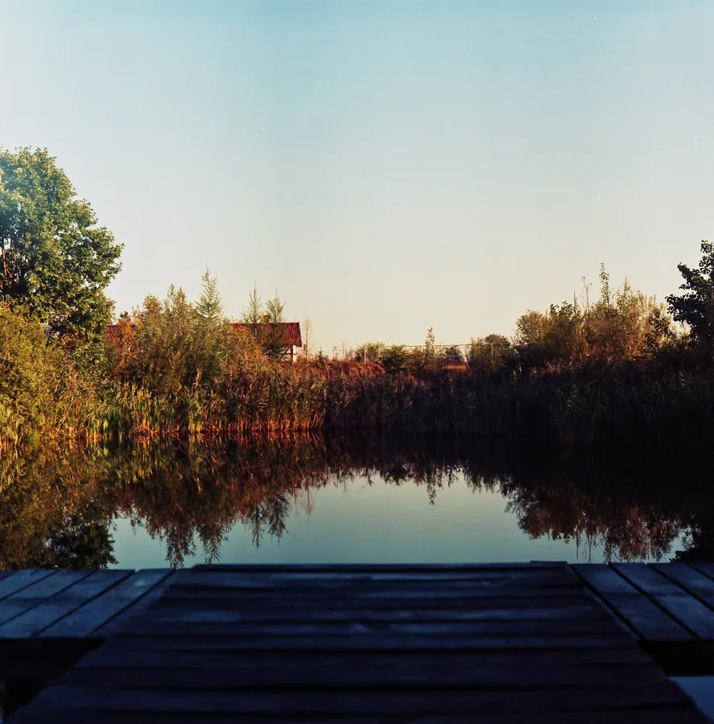
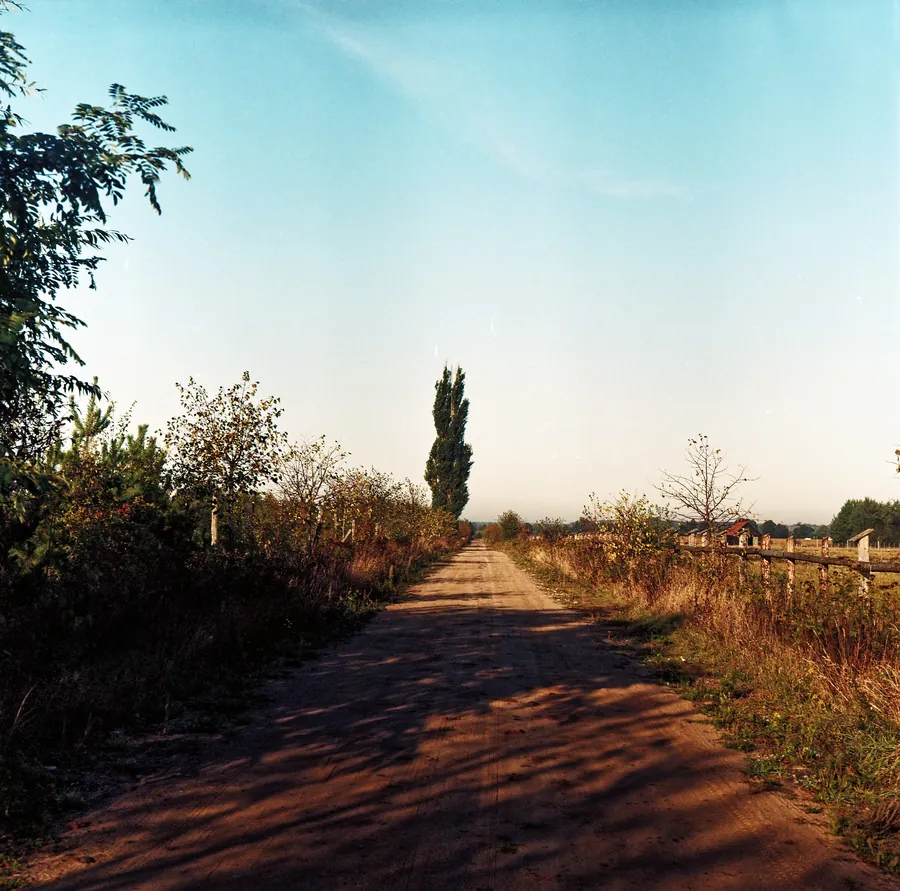
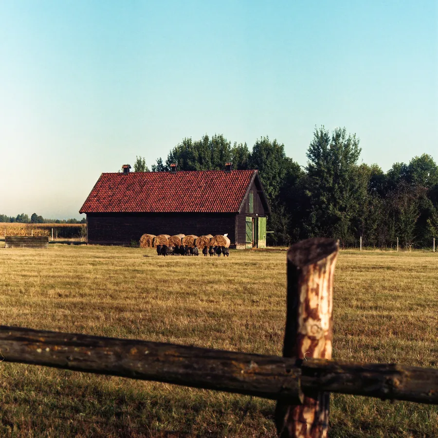

Przejdź do treści
Zenbliski
Menu
Archiwalne
Analogowe
Kolekcja
Akcesoria foto
Materiały reklamowe
Artykuły – blog
Foto ciekawostki
Cyfrowe
Analogowe
Pentacon Six, Biometar 2,8/80, Kodak Portra 160, 2020 r.
Aparat
Pentacon Six
Obiektyw
Carl Zeiss Jena Biometar 2,8/80
Film
Kodak Portra 160
Rok
2020




Poprzednia
Nikon FE2, Nikkor 35-70 mm, Kentmere Pan 200, Wołomin, Warszawa 2026 r.